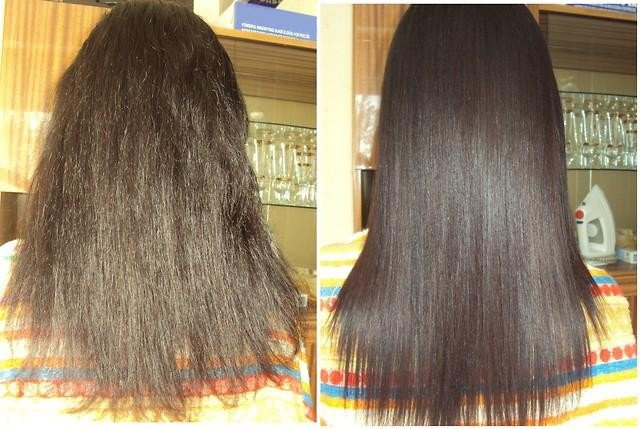
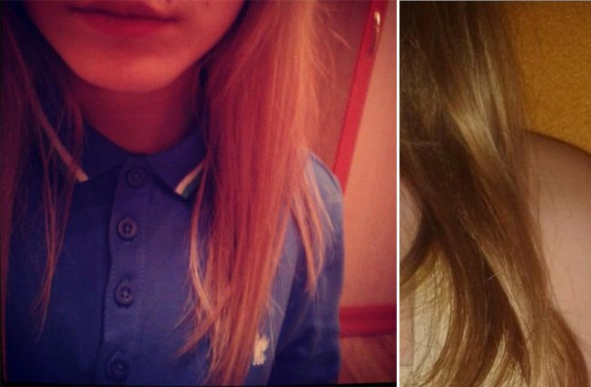
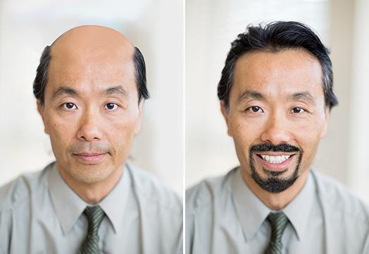

ความปลอดภัย
234+256
@การเจาะ
บล็อก บล็อก เหงียน
ความปลอดภัย
234+256
ความปลอดภัย
15+14


ความปลอดภัย
ความปลอดภัย
95%
สนับสนุนโดย 195 คน
บล็อกส่วนตัว
สวัสดีผู้อ่านที่รัก!
ฉันต้องการแบ่งปันกับคุณว่าฉันแก้ไขปัญหาได้อย่างไร หลั่งน้ำตา ผม. จริงๆมันเป็นปัญหาร้ายแรง - อย่างน้อยกับฉัน ฉันไม่เคยคิดจะเผชิญหน้า กับมันโดยเฉพาะอย่างยิ่งเมื่อมันเป็น 29 ปี จริงๆแล้วเป็นอย่างใดอย่างหนึ่ง ภัยพิบัติ! ผมไม่หลุดร่วง ในหนึ่งวันไม่ได้เป็นกระบวนการทั้งหมด - ฉันเห็นผมของฉันได้รับบาง แต่ละ วัน: เมื่อหวีแชมพูสระผมแม้นอน ฉันมักจะแปรงผมในพื้นที่เล็ก ๆ แต่วันหนึ่ง ฉันสังเกตเห็นภูมิภาค คราบ อยู่กลางศีรษะ
ดู, นี่คือผมประมาณ 2 เดือนที่ผ่านมา (หรือมากกว่า):
ผู้ชายอย่างน้อยสามารถตัดผมสั้นมากยิ่งขึ้นเพราะพวกเขาเป็นผู้ชาย แต่ผมสั้น ไม่เหมาะสำหรับผู้หญิง, เราไม่สามารถเป็นผู้หญิงได้อย่างแน่นอน ผม อาจจะยุ้ยเล็กน้อย แต่ผมสวยยาวและหนาเป็นสิ่งที่ทำให้ขึ้น หญิง. การสูญเสียนี้เช่นเดียวกับการสูญเสียตัวเอง คุณเข้าใจสิ่งที่ฉันหมายถึง? ฉันต้องใช้เวลาสองสามวันเพราะฉันรู้สึกอายมากเกินไปที่จะเผชิญหน้า. ฉันอายุ 29 ปี แต่ฉันยังรู้สึกเหมือนเด็กสาว และสามีของ ฉัน ... เขาบอกว่าทุกสิ่งทุกอย่างดีและเขายังรักฉันไม่ว่าฉันจะมองแบบไหน ฉันรู้สึกว่าเขาหนีไป มันเป็นเวลานรกกับฉัน ฉันไม่มั่นใจ ตัวเองและเป็นผลให้ฉันรู้สึกว่าทุกอย่างยุบลง
ฉันใช้ทุกอย่างที่เป็นไปได้ ฉันไม่มีเวลาเรียนรู้เพียงแค่ทดลองเนื่องจากปัญหานี้ควรได้รับการแก้ไข ให้เร็วที่สุด คุณไม่สามารถนึกภาพได้กี่ครั้งเลยทีเดียว นี่คือชื่อ หนังสือ:
แชมพูสระผม (* ซื้อตัวเลขมากมายหลายยี่ห้อและราคาฉันใช้มัน เพียงเรียบ แต่ไม่ได้มีประสิทธิภาพแม้ในเวลาอันสั้น) พวกเขาไม่ได้ เคยมีประสิทธิภาพ!
- มาสก์และโลชั่น (ฉันยังซื้อจำนวนมากใช้กับหรือไม่มี การรักษาอื่น ๆ ผมของฉันอ่อน แต่ยังคงมีการสูญเสียเส้นผม) พวกเขาไม่เคยทำงาน!
- ยาเสพติด (เมื่อผู้เชี่ยวชาญให้คำปรึกษาเขาสั่งให้ฉันใบสั่งยาตับ ฉันมีสารพิษที่นำไปสู่การสูญเสียเส้นผม) ฉันใช้หลักสูตรการทดสอบบางอย่าง ผลลัพธ์คือ: ปฏิบัติตาม กรณีของฉันทุกอย่างดี แต่ฉันยังคงสูญเสียเส้นผม พวกเขาไม่ได้ ชั่วโมงที่มีประสิทธิภาพ!
- อาหาร (ไม่มีอะไรจะพูดจริงๆ "อาหารที่เหมาะสม" จะไม่ทำให้เส้นผมของคุณยาวนาน ออกมาเชื่อฉันไป) - พวกเขาไม่เคยทำงาน!
-- การเยียวยาพื้นบ้าน ฉันต้มน้ำกระเทียมต้มบนหนังศีรษะขณะที่ใช้น้ำมัน หญ้าเจ้าชู้และมายองเนส - แต่ก็เลวร้ายยิ่งผมจะได้รับบาง) พวกเขา ไม่เคยมีประสิทธิภาพ!
อย่างที่คุณเห็นฉันไม่ได้ข้ามแขนของฉัน แต่จริงๆหมดหวังเพราะไม่มีอะไร มีประสิทธิภาพ แม้เพียงนิดเดียว ไม่มีผลเลย ฉันหวังว่าอย่างน้อยหนึ่งอย่าง วิธีการรักษาผมร่วง มีประสิทธิภาพ
ฉันเรียกเพื่อนของฉันเธอหัวเราะที่ฉันและบอกว่าฉันโง่ไม่มีหน้ากากแม้ว่า แพงหรือมีราคาแพงยังสามารถมีประสิทธิภาพ พวกเขาทำงานเฉพาะสำหรับผมชนิดซิลิโคน เงาและเรียบเนียนในช่วงเวลาสั้น ๆ
การอยู่ในร้านทำผมก็ไม่สามารถคาดหวังว่าผมจะได้รับตามที่สัญญาไว้คุณจะมีประสิทธิภาพเท่านั้น ตาชั่วคราว 3 วันก็เหมือนกัน.
เพื่อนของฉันแนะนำให้ฉันลองทำอะไรสักอย่าง - สเปรย์ฉีดผมที่เรียกว่า Forso. ทุกคนในร้านทำผมของเธอทำงานในขณะนั้นโดยทั่วไป เป็นวิธีที่จะทำให้ผมยาวและฟื้นฟูเส้นผม
ในระยะสั้นเพื่อนของฉันบอกว่าทุกผลิตภัณฑ์ดูแลเส้นผมมีประสิทธิภาพ ประกอบด้วยส่วนผสม ในสเปรย์นี้. พวกเขามีประสิทธิภาพ แต่ราคาแพง
ช่างทำผมรู้ว่ามันเป็นเวลานานเพราะมีราคาแพงมากเนื่องจากการบูรณะทางชีวภาพและส่วนขยายของเส้นผมจะขึ้นอยู่ เกี่ยวกับผลิตภัณฑ์นี้ พวกเขาเพิ่งสร้างชื่อฉูดฉาดเพื่อให้ได้เงินมากขึ้น จากลูกค้า
ที่จริง บางที่โดยเฉพาะอย่างยิ่งพื้นที่ภาคกลางและบนหน้าผากจะดูเหม่งโดยผมร่วงจากมัน และต่อมา นั่นคือทั้งหมด - หัวล้านจะเริ่มหาย.
ฉันร้องไห้จริงๆ! มันไม่น่าเชื่อ แต่ก็เป็นความจริง ฉันไม่รู้ว่าสีอะไร แต่ มีประสิทธิภาพจริงๆ!
ไม่เชื่อ? มองตัวเอง (ห่างกัน 2 เดือน)
ชัดเจนแตกต่าง! ในที่สุดฉันก็ไม่ต้องคลุมผมอีกต่อไป
ฉันจะใช้มันได้อย่างไร? ทำตามคำแนะนำสำหรับการใช้งาน - ฉันพ่นบนผมและผิวมัน, ถูเบา, ปกคลุมด้วยกระดาษมันและผ้าขนหนูและล้างออก ใช้งานได้ง่ายมากและ ประสิทธิภาพพิเศษ สูง!
ฉันซื้อได้ที่ไหน? Trên หน้านี้. อย่างที่ฉันรู้จัก ให้เฉพาะผลิตภัณฑ์ของแท้เท่านั้นสามารถตรวจสอบบาร์โค้ดบนบรรจุภัณฑ์ได้
นี่คือเรื่องราวทั้งหมดของฉัน ความสุขไม่รู้จบดังนั้นฉันจึงตัดสินใจร่วมกับคุณ ฉันแน่ใจ แน่ใจว่ามันจะมีประโยชน์
นอกจากนี้ยังทำงานร่วมกับแม่ของฉัน นี่เป็นผลมาจากแม่ของฉัน: แน่ใจว่ามันจะมีประโยชน์

ป.ล. แบ่งปันเรื่องราวของคุณในความคิดเห็น
Bình luận
ฉันก็รู้ด้วย sản ผลิตภัณฑ์นี้ ฉันเป็นหัวล้านจากที่มาก เร็ว ๆ นี้ผลิตภัณฑ์นี้จริงๆช่วยฉันผลที่ได้เป็นต้นฉบับเกือบ มีประสิทธิภาพมาก!

ถ้าไม่มีอะไรอื่นสามารถช่วยได้แล้วใช่คุณควรใช้ ผมยังปลูกผมไว้ แพงเกินไป เงินเป็นจำนวนมาก ในมือข้างหนึ่งฉันไม่เสียใจ แต่ที่อื่น ๆ - น่าเสียใจจริงๆ ฉันจริงๆ สามารถประหยัดเงินเป็นจำนวนมากถ้าคุณรู้ได้เร็วกว่า ((ทำไม?!
ฉันไม่รู้ว่าจะพูดอะไร น่าสนใจจริงๆฉันจะสั่ง ไม่หัวโล้นจริงๆ แต่ผมร่วง มาก!
ทุกคนใช้แล้ว XỊT นี้หรือไม่? กรุณาแบ่งปันฉัน ความตื่นเต้น ฉันได้ยินมาว่าเหมาะสำหรับทั้งชายและหญิงค่ะ คือ การพัฒนาทางวิทยาศาสตร์ ฉันได้อ่านในไม่กี่ ฟอรั่มที่ผู้เล่นฟุตบอลที่มีชื่อเสียงได้รับการกำจัดขอบคุณหัวล้าน sản ผลิตภัณฑ์นี้.
คุณรู้อะไรอีก?
ฉันเห็นด้วยนี่เป็นเรื่องจริง sản มีประโยชน์สำหรับการรักษาเส้นผม ขอโทษนะ! ฉันรู้ Forso จากบทความนี้ แต่ผม เส้นผมของฉันได้รับความเสียหายอย่างมากจากการดัดผมจะงอแม้ว่าผู้คนจะเตือนว่ามันเป็นอันตรายต่อเส้นผม ผมของฉันหลังจากที่ดัดเป็นร้ายจริงๆแม้ว่าฉันไม่ได้กับช่างทำผมมืออาชีพ ฉันใช้แบบนี้xịt ผมนี้เป็นเวลาหนึ่งเดือนผมของฉัน เงางามจริงๆ! และยาวกว่าอีก 5 ซม.! พอใจจริงๆ
ฉันสั่งลูกสาวของฉันเป็นห่วงจริงๆ ฉันไม่เห็นปัญหากับผมของเธอ, แต่เธอหมดหวังมาก
Ồ, loại xịt นี้ยังช่วยให้ฉัน! ผลเร็วมาก! และ คุณไม่ต้องรอครึ่งปีเพื่อดูความแตกต่าง.
ตรังทรานถ้าคุณยังมีข้อสงสัยดูผลลัพธ์ของฉัน คำถาม?)

ฉันยังพบปัญหาที่คล้ายกันฉันได้เผชิญหน้ากับมันเป็นเวลา 7 ปี แต่ก็ยังไม่มีผล เฉพาะประเภทนี้เท่านั้นที่สามารถช่วยฉันได้ ฉันไม่รู้ว่าจะทำอย่างไรถ้าไม่มี ฉันซื้อมา แม่ของฉันด้วยเธอมีความสุขมาก คอ!